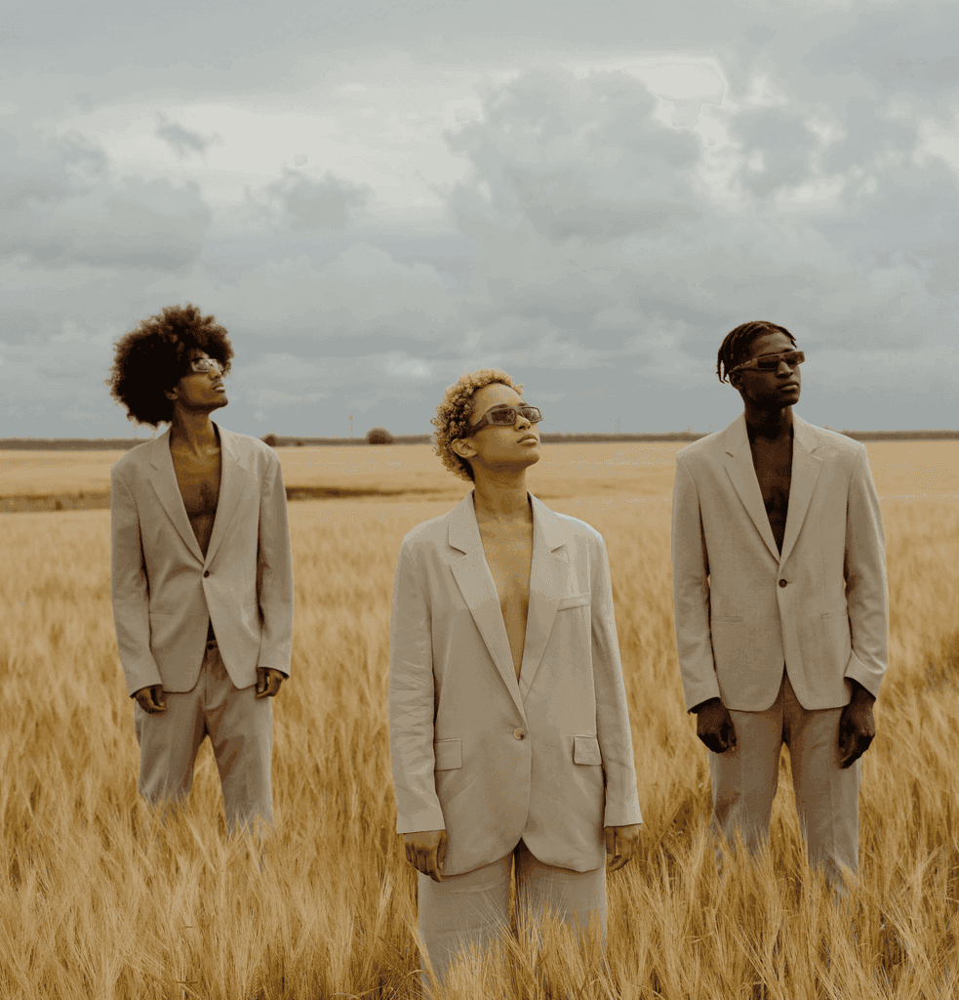
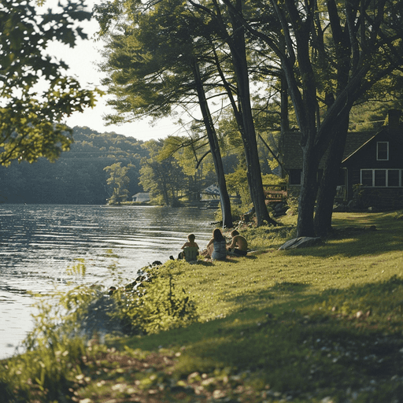
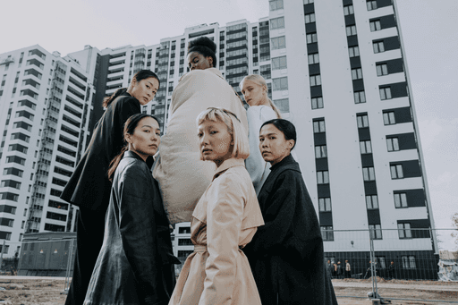
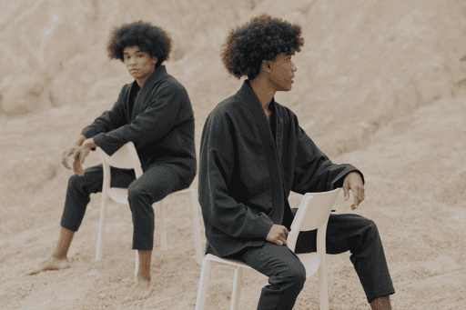

下班以后，北京的天还亮着。路边的树叶被风吹得沙沙响，空气里终于少了一点白天的燥热。
最近又试了几个新的 AI 工具。有些功能让人眼前一亮，也有一些还需要耐心磨合。我把值得继续研究的想法随手记了下来，准备周末再慢慢整理。
回到家后，翻了翻之前的手账。很多当时觉得普通的小事，隔一段时间再看，反而变得很珍贵。今晚也留下一页，记住这阵难得的晚风。
 Là où dort l’eau
Là où dort l’eau

Champ Silencieux
Lisière
Élan Brut
Les Silences Miroirs Révolte douce
Révolte douce
我目前在北京工作和生活，是一名互联网产品经理。
我对 AI 及其带来的新变化很感兴趣，也喜欢用手账记录生活。闲暇时，我会尝试新工具、整理想法，或者记录一些值得留住的日常。
这个网站用来分享我的作品、思考，以及生活中的一些片段。
Hi, I’m Zhou Ying, a product manager working and living in Beijing.
I’m interested in AI and the changes it continues to bring. I also enjoy journaling as a way to document everyday life. In my spare time, I like trying new tools, organizing ideas, and capturing moments worth remembering.
This website is where I share my work, thoughts, and glimpses of everyday life.
下班以后，北京的天还亮着。路边的树叶被风吹得沙沙响，空气里终于少了一点白天的燥热。
最近又试了几个新的 AI 工具。有些功能让人眼前一亮，也有一些还需要耐心磨合。我把值得继续研究的想法随手记了下来，准备周末再慢慢整理。
回到家后，翻了翻之前的手账。很多当时觉得普通的小事，隔一段时间再看，反而变得很珍贵。今晚也留下一页，记住这阵难得的晚风。